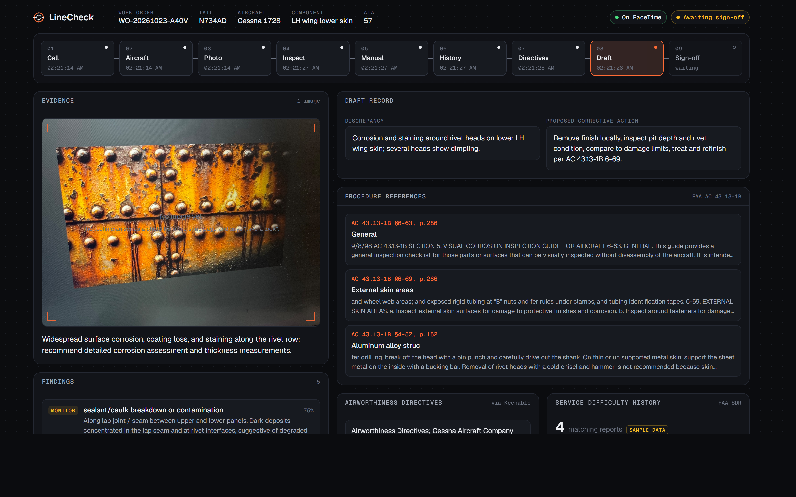
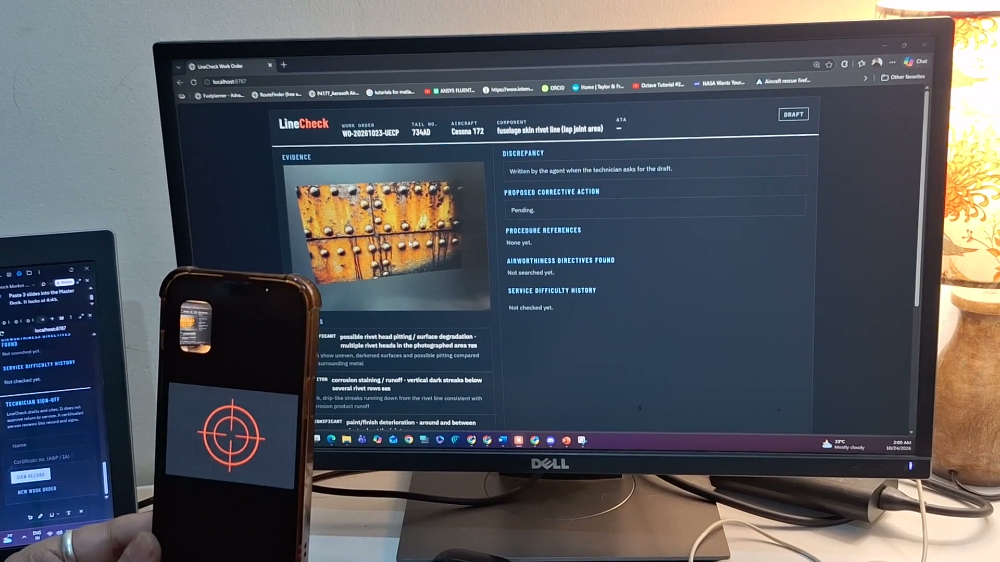
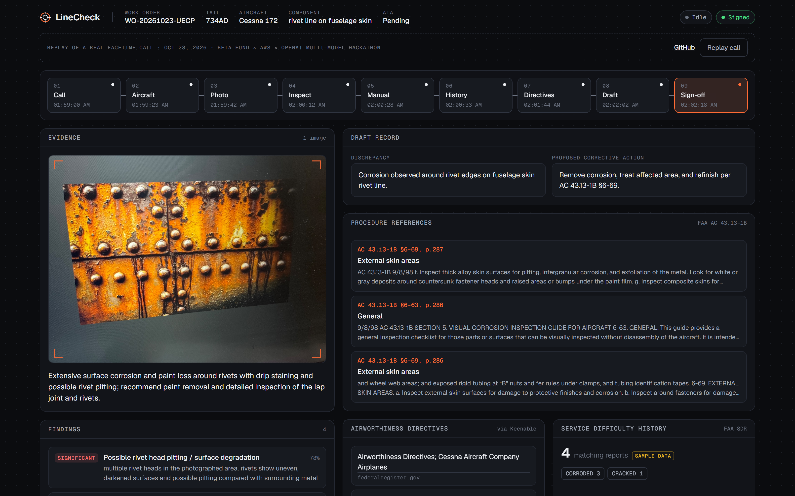

A technician FaceTimes LineCheck with their hands still on the aircraft. It takes the tail number by voice, inspects a photo of the part, cites the exact section of the FAA repair manual, checks service difficulty history and airworthiness directives, and drafts the work order. A certificated mechanic reviews and signs.
Two-minute recording of a real FaceTime call with LineCheck, filmed live. A three-minute version shows the full call. Or replay the call on the work-order board, step by step.

The work-order board after a real call: the pipeline across the top, the inspected photo and findings on the left, the draft record, manual citations, directives and service history on the right.
LineCheck assists and documents; it never says a part or an aircraft is airworthy, serviceable or safe to fly. Every record stays a draft until a certificated mechanic signs it.


| Partner | Role in LineCheck |
|---|---|
| Chert | The FaceTime line. chert dev keeps a warm room so calls are answered in about 0.1 s; the agent greets on chert_bridge_ready |
| LiveKit | Real-time transport: the agent registers as a worker and joins each call's room |
| OpenAI | gpt-realtime holds the conversation and calls tools; a vision model returns structured findings through a strict JSON schema |
| Keenable | Live airworthiness directive search, pinned to federalregister.gov, widening to the open web |
| AWS | Event host; deployment on the roadmap |
Who we are, what we are solving, and why our team. PDF · PowerPoint
Aerospace, electronics, systems engineering. Agent, vision and data pipeline.
System dynamics, socio-technical systems. Research, human factors and product.